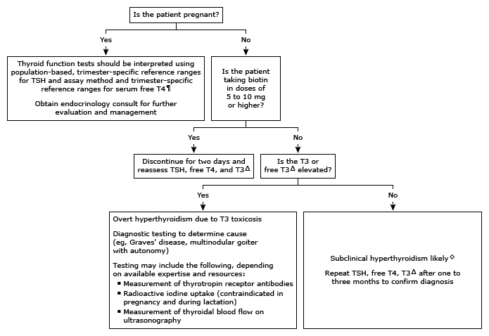

T3: triiodothyronine; T4: thyroxine; TSH: thyroid-stimulating hormone.
* The normal range for TSH in nonpregnant adults is approximately 0.5 to 4.5 mU/L, and for serum T4, approximately 0.8 to 1.8 ng/dL (10.3 to 23.2 pmol/L). Interpretation of a specific abnormal test result should be based upon the reference range reported with that result.
¶ Diagnosis of true hyperthyroidism during pregnancy may be difficult because of the changes in thyroid function that occur during normal pregnancy. Overt hyperthyroidism during pregnancy is characterized by suppressed (<0.1 mU/L) or undetectable (<0.01 mU/L) serum TSH value and a free T4 and/or free T3 (or total T4 and/or total T3) measurement that exceeds the normal range for pregnancy. Refer to UpToDate content on thyroid disease in pregnancy.
Δ In women taking estrogen, measure free T3 (rather than total T3) as estrogens increase thyroid binding globulin, which may result in high total T3 but not free T3 levels.
◊ Other, less likely, causes of low TSH with normal free T4 and T3 in the ambulatory setting include: